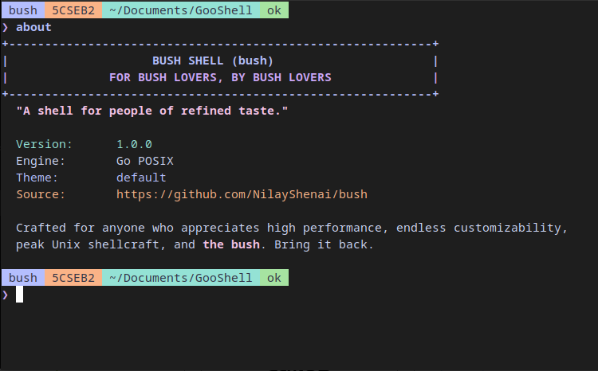

Bush compiles directly into a standalone, single-binary executable with zero Cgo and zero runtime dependencies:
# Clone and build
git clone https://github.com/NilayShenai/bush.git
cd bush
go build -ldflags="-s -w" -o bush main.go
# Run directly
./bush
# (Optional) Install system-wide
sudo cp bush /usr/local/bin/bush
sudo chmod 755 /usr/local/bin/bushBush fully conforms to standard POSIX login shell specifications (-l, -i, -s, -c):
echo "/usr/local/bin/bush" | sudo tee -a /etc/shells
chsh -s /usr/local/bin/bush
su - $USERFilter or search commands below:
~/.bush_frecency without external tools.
rm -rf *, git reset --hard, git push -f, dd). Calculates affected file count and requires confirmation.
EADDRINUSE in a single command.
q to return to shell.
.env files directly into session environment with automatic masking of sensitive keys (tokens, secrets, keys).
memo or memo | grep ... without re-running slow queries.
mark api) and teleport to it from anywhere (jump api).
When running destructive operations, Bush evaluates the target paths and file counts against the safety threshold:
+--- [!] Blast Radius Guard -------------------------------+
| Command: rm -rf *
| Reason: Target is root, wildcard, or home directory
| Affected: 38 files
| Target: *
+----------------------------------------------------------+
Type 'yes' or press Enter to proceed, or 'no'/Esc to cancel:Intercepted commands include rm -rf on broad targets, git reset --hard, git push --force, dd of=/dev/sd*, and chmod -R 777 /.
Bush automatically calculates a weighted score for visited directories based on frequency and elapsed time:
Score = Visits * Weight(TimeSinceVisit)
# Teleport to matching directory
z doc # Jumps to ~/Documents/GooShell
z api # Jumps to /var/www/my-project/api
# Display top 10 frecent directories with scores
z
# Clear frecency database
z --clearInspect and release local ports without piping lsof or netstat:
# Inspect port 3000
port 3000
# Output: PID, Process Name, Executable, Listening Address
# Kill process listening on port 3000
killport 3000
# Gracefully signals SIGTERM, followed by SIGKILL if neededConfigured declaratively in ~/.config/bush/config.toml (or fallback ~/.bush.toml):
[shell]
greeting_banner = true
motto = "A shell for people of refined taste."
history_limit = 5000
[guard]
enabled = true
file_threshold = 10
[prompt]
multiline = true
symbol = "❯ "
badges = ["badge", "user", "dir", "git", "duration", "status"]
max_dir_depth = 4
duration_threshold_ms = 5
show_git = true
show_git_dirty = true
[theme]
name = "lavender" # "lavender", "nord", "tokyo_night", "rose_pine", "custom"
[autosuggest]
enabled = true
suggest_history = true
suggest_subcommands = true
suggest_files = true
suggest_binaries = true
[aliases]
ll = "ls -la --color=auto"
gs = "git status"
gp = "git pull"| Keybinding | Action |
|---|---|
Tab |
Accept full smart prediction or trigger context-aware completion |
Right Arrow |
Accept inline ghost suggestion |
Alt + Right |
Accept next word of suggestion |
Up / Down |
Browse history with prefix filtering |
Ctrl + R / Ctrl + P |
Interactive fuzzy history search popup |
Ctrl + A / Ctrl + E |
Move cursor to beginning / end of line |
Ctrl + U / Ctrl + K |
Kill line to start / end |
Ctrl + W |
Delete previous word |
Ctrl + L |
Clear screen and redraw prompt |
Ctrl + C |
Cancel current line input |
Ctrl + D |
Exit shell (on empty line buffer) |